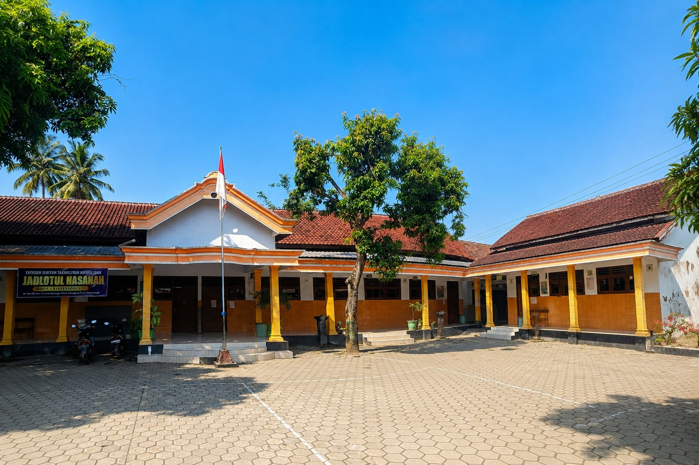
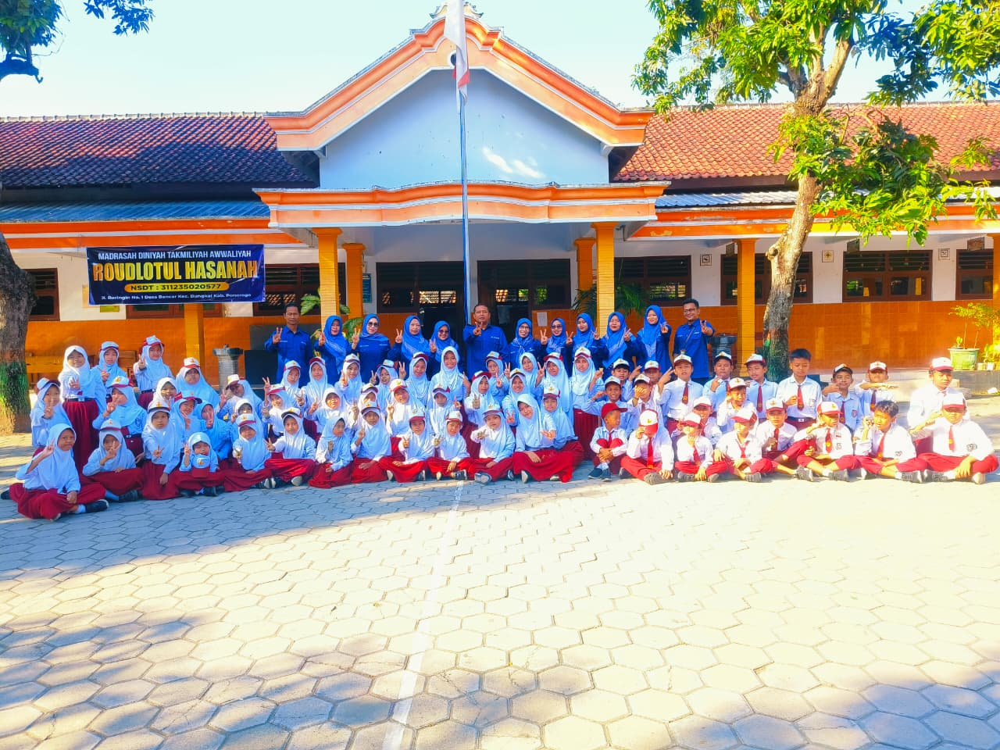

Profil Sekolah
SD Negeri 2 Bancar merupakan sekolah dasar negeri yang berada di Desa Bancar, Kecamatan Bungkal, Kabupaten Ponorogo, Jawa Timur. Sekolah ini berdiri sejak 31 Desember 1975 berdasarkan SK Pendirian Nomor 405/1975 dan berada di bawah naungan Kementerian Pendidikan dan Kebudayaan Republik Indonesia.
Sebagai lembaga pendidikan dasar, SDN 2 Bancar berkomitmen menghadirkan pembelajaran yang nyaman, religius, kreatif, dan menyenangkan bagi peserta didik. Dengan dukungan tenaga pendidik yang profesional, sekolah terus berkembang menjadi ruang belajar yang tidak hanya menekankan prestasi akademik,
tetapi juga pembentukan karakter disiplin, sopan santun, dan akhlakul karimah 🌱✨Saat ini SDN 2 Bancar dipimpin oleh Bapak Yuyut Awal Setyo selaku kepala sekolah. Selain kegiatan pembelajaran formal, siswa juga terintegrasi dengan kegiatan Madrasah Diniyah Roudlotul Hasanah yang dilaksanakan
setelah jam sekolah selesai sebagai bentuk penguatan pendidikan keagamaan. Dengan lingkungan sekolah yang asri dan semangat kebersamaan seluruh warga sekolah, SDN 2 Bancar terus berupaya menjadi sekolah yang unggul, berprestasi, dan mampu mencetak generasi masa depan yang cerdas serta berakhlak mulia.
Kepala Sekolah SDN 2 Bancar Visi: Misi:
Bersama membangun generasi yang cerdas,
berkarakter, dan berakhlakul karimah 🌱✨

Madrasah Diniyah Roudlotul Hasanah
Sebagai bagian dari penguatan pendidikan karakter dan keagamaan, peserta didik SDN 2 Bancar juga mengikuti kegiatan Madrasah Diniyah Roudlotul Hasanah
setelah pembelajaran formal selesai. Pembelajaran meliputi Tahsin dan Tahfidz Al-Qur’an, Aqidah, Akhlak, Fiqih, Tarikh Islam, serta Pegon
yang dikemas dalam suasana belajar hangat, religius, dan menyenangkan untuk membentuk generasi yang cerdas, santun, dan berakhlakul karimah 🌙✨

Sambutan Kepala Sekolah
Selamat datang di website resmi SDN 2 Bancar.
Kami berkomitmen menghadirkan lingkungan belajar
yang nyaman, religius, kreatif, dan menyenangkan
untuk membentuk generasi unggul masa depan.
Yuyut Awal Setyo
Visi & Misi
Mewujudkan peserta didik yang cerdas, berkarakter,
religius, dan berprestasi.
Keluarga Besar SDN 2 Bancar
Madrasah Diniyah